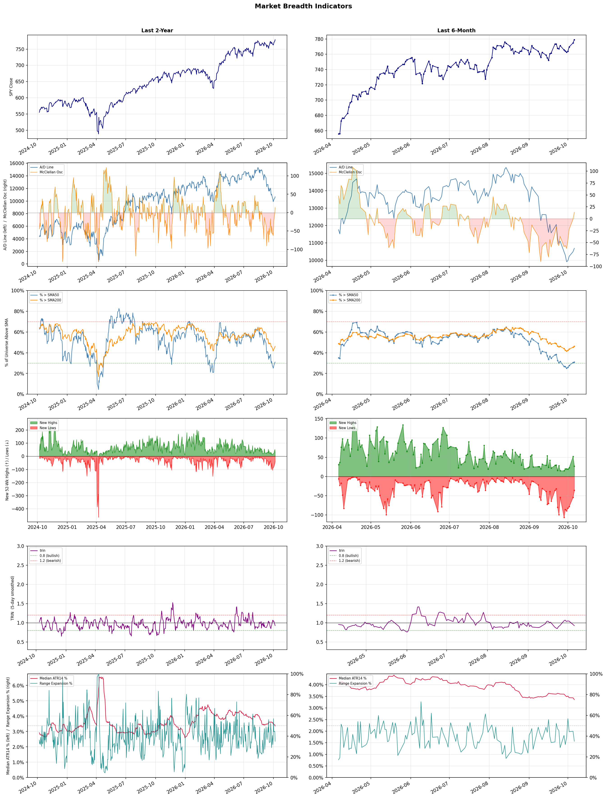

A daily market breadth and sector rotation report for active investors
| Item | Read |
|---|---|
| Regime | Defensive |
| Risk posture | Defensive |
| Universe | 1,318 stocks tracked · 27 new 52-week highs · 30 active swing setups |
| Breadth | only 31.0% of tracked stocks are above SMA50, new lows exceed new highs (36 vs 27) |
| Leadership | Oil & Gas Refining & Marketing, Health Information Services, and Diagnostics & Research |
| Weakest groups | Agricultural Inputs, REIT - Mortgage, and Resorts & Casinos |
Use this report to prioritize research and chart review; validate entries, stops, liquidity, earnings, and risk before acting.
| Item | Read |
|---|---|
| Primary read | Defensive regime with Defensive risk posture. |
| Research queue | MPC, PBF, VLO, DINO, CSAN |
| Leadership focus | Oil & Gas Refining & Marketing, Health Information Services, and Diagnostics & Research |
| Caution list | Agricultural Inputs, REIT - Mortgage, and Resorts & Casinos |
| Review prompt | Check extension risk, chart location, fundamentals, valuation, and earnings before using any research row. |
| Item | Read |
|---|---|
| Primary read | 3 active risk warnings; use screen output as watchlist input only. |
| Bullish screens | ALAB, NVDA, CRWD, GTLB, OKTA |
| Bearish screens | JBLU, CG, OTF, PSEC, FER |
| Alerts / levels | Automated trigger, stop, ATR, liquidity, reward/risk, and event-risk levels are pending future enrichment. |
| Review prompt | Open the linked chart, define trigger and invalidation, then check liquidity and event risk independently. |
Risk Posture: Defensive — screen backdrop favors caution; require independent risk review before new exposure
Metric context: McClellan below -50 = elevated selling pressure; below -100 = washout territory. Range Expansion = share of stocks with daily range above their 20-day average. Signal Density = share of tracked names appearing in signal screens.
| Breadth Date | % > SMA50 | % > SMA200 | New Highs | New Lows | McClellan | Median Range | Avg Range | Median ATR14 | Range Expansion | Signal Density |
|---|---|---|---|---|---|---|---|---|---|---|
| 2026-10-06 | 31.0% | 46.3% | 27 | 36 | 13.9 | 2.8% | 3.4% | 3.4% | 35.0% | 2.3% |

Prior comparison date: October 5, 2026
| Metric | Prior | Current | Change |
|---|---|---|---|
| Regime | Defensive | Defensive | unchanged |
| Risk Posture | Defensive | Defensive | unchanged |
| % > SMA50 | 30.4% | 31.0% | +0.6 pts |
| % > SMA200 | 45.3% | 46.3% | +1.0 pts |
| New Highs | 52 | 27 | -25 |
| New Lows | 55 | 36 | +19 |
Top-10 industries entering: REIT - Hotel & Motel and Scientific & Technical Instruments. Top-10 industries leaving: Computer Hardware and Copper. New multi-signal long setups: ABBV, ALAB, EXTR, GTLB, ITUB. New multi-signal short setups: CG, FER, JBLU, MLYS, MRLN.
| Status | Tickers | Read |
|---|---|---|
| Added | ABBV, ALAB, AMAT, CG, EXTR, FER, GTLB, HPQ | New technical screen matches vs prior report. |
| Removed | AMPL, AZTA, CLVT, DHT, DT, FLEX, FRO, ILMN | No longer present in today's technical screen matches. |
| Still Active | BBD, CRWD, GTES, JCI, LITE, NVDA, P, PSEC | Appeared in both current and prior reports. |
| Promoted | none | Model Screen Score improved by at least 15 points. |
| Downgraded | none | Model Screen Score declined by at least 15 points. |
| Direction | Industry | ETF | Prior Rank | Current Rank | Days | Rank Change |
|---|---|---|---|---|---|---|
| Rose | Semiconductor Equipment & Materials | SOXX | 77 | 5 | 35 | +72 |
| Rose | Electronic Components | XLK | 70 | 4 | 35 | +66 |
| Rose | Communication Equipment | IYZ | 76 | 12 | 35 | +64 |
| Rose | Semiconductors | SOXX | 65 | 6 | 35 | +59 |
| Rose | Apparel Manufacturing | N/A | 82 | 27 | 28 | +55 |
Bull: The Semiconductor Equipment & Materials sector is experiencing rising relative strength due to increasing demand for advanced chip manufacturing technologies, highlighted by multiple bullish articles projecting growth in semiconductor stocks through 2026. Recent headlines indicate a sector-wide rally, with companies like Lam Research and Applied Materials seeing significant gains, driven by robust investment in semiconductor infrastructure and innovation, despite short-term volatility such as the recent drop in Applied Materials' stock. This suggests a strong underlying momentum in the industry as it adapts to evolving technological needs and market dynamics.
Bear: While the semiconductor equipment sector may currently exhibit rising relative strength and short-term gains, the underlying fundamentals suggest potential vulnerabilities. The recent volatility, particularly the 10% drop in Applied Materials' stock following negative news from Broadcom, highlights the fragility of market sentiment and the risks associated with overreliance on projected growth. Additionally, the industry's cyclical nature and potential for oversupply, coupled with geopolitical tensions and supply chain disruptions, could dampen long-term demand and profitability, making the current rally appear more speculative than sustainable.
Verdict: The Semiconductor Equipment & Materials sector is experiencing a rise due to heightened demand for advanced chip manufacturing technologies, driven by increased investment in semiconductor infrastructure and innovation. However, investors should remain cautious of the sector's cyclical nature and potential oversupply risks, particularly in light of recent volatility exemplified by Applied Materials' stock drop, which underscores the fragility of market sentiment and the impact of geopolitical tensions on long-term profitability.
Sources: Google News
Bull: The rising relative strength of the Electronic Components industry can be attributed to robust earnings performance and positive industry trends highlighted in recent headlines. Notably, Amphenol's strong Q2 results position it as a leader in the sector, while articles emphasizing promising trends for manufacturing electronics stocks suggest a favorable outlook driven by increased demand for electronic components across various sectors. Additionally, the focus on companies like TTM Technologies and Benchmark indicates a competitive landscape that is likely benefiting from technological advancements and growing market needs, further supporting the industry's upward momentum.
Bear: While the rising relative strength of the Electronic Components industry may seem promising, it is essential to consider that this growth could be driven by short-term factors rather than sustainable demand. The headlines celebrating strong earnings from select companies like Amphenol may overshadow broader industry challenges, such as supply chain disruptions, rising material costs, and potential demand saturation as consumers and businesses adjust to economic uncertainties. Furthermore, the competitive landscape could lead to price wars that erode margins, undermining the long-term profitability of the sector.
Verdict: The Electronic Components industry's rising strength is fundamentally driven by strong earnings from key players like Amphenol and increasing demand across various sectors, suggesting a robust growth trajectory. However, investors should remain cautious of potential risks, including supply chain disruptions and rising material costs, which could undermine profitability and lead to price wars in a competitive landscape. To navigate this environment, focus on companies with strong fundamentals and resilience to economic fluctuations.
Sources: Google News
Bull: The Communication Equipment sector is experiencing a rising relative strength primarily due to increasing demand for advanced telecommunications infrastructure, driven by the ongoing rollout of 5G technology, as highlighted in the "12 Best 5G Stocks for 2026" article. Additionally, the sector is benefiting from a broader market rally, as evidenced by Viasat's 6.4% jump, and analysts are identifying specific stocks poised to capitalize on these favorable industry trends, suggesting a robust outlook for companies within this space.
Bear: While the rising relative strength in the Communication Equipment sector may seem promising, it's crucial to consider the potential pitfalls that could undermine this momentum. The ongoing rollout of 5G technology, while a catalyst, also faces significant regulatory hurdles, supply chain constraints, and high capital expenditures that could dampen profitability for many companies. Additionally, the recent sector-wide rally, exemplified by Viasat's jump, could be a short-term reaction rather than a sustainable trend, as underlying economic uncertainties and rising interest rates may ultimately weigh on investment in telecommunications infrastructure.
Verdict: The Communication Equipment sector's rising strength is fundamentally driven by robust demand for advanced telecommunications infrastructure, particularly fueled by the ongoing rollout of 5G technology, which is expected to enhance connectivity and drive future growth. However, investors should remain cautious of potential risks, including regulatory hurdles and supply chain constraints that could impact profitability, alongside broader economic uncertainties and rising interest rates that may hinder long-term investment in the sector.
Sources: Google News
Bull: The semiconductor industry is experiencing a bullish trend due to a combination of sector-wide rallies and strong stock performances, as highlighted by ON Semiconductor's impressive 5.3% jump and BofA's identification of top stocks to buy following a recent selloff. Additionally, the positive sentiment in the market, as indicated by articles from The Globe and Mail and Investor's Business Daily, suggests that investors are increasingly optimistic about the sector's recovery and growth potential, driven by ongoing demand for chips in various applications, including AI, automotive, and consumer electronics.
Bear: While the recent rally in semiconductor stocks may appear promising, it is crucial to recognize that this sector is highly cyclical and vulnerable to macroeconomic pressures, including potential supply chain disruptions and geopolitical tensions that could impact production and demand. Furthermore, the surge in stock prices could be driven more by short-term sentiment and speculative trading rather than sustainable fundamentals, as evidenced by the recent selloff that preceded this rally, indicating underlying volatility and uncertainty in the market.
Verdict: The semiconductor industry's bullish trend is primarily driven by robust demand across key sectors such as AI, automotive, and consumer electronics, coupled with positive market sentiment following a recent selloff. However, investors should remain cautious of the cyclical nature of the industry and the potential for macroeconomic pressures, including supply chain disruptions and geopolitical tensions, which could undermine this growth and lead to increased volatility.
Sources: Google News
Bull: The Apparel Manufacturing sector is experiencing rising relative strength primarily due to favorable industry trends driven by shifting trade dynamics and sourcing strategies, as highlighted in recent headlines. The anticipated revival of the sector, fueled by new trade deals and a strategic pivot away from China for sourcing, positions companies within this industry to capitalize on increased demand and improved profit margins, as noted in sources like The Economic Times and TradingView. Additionally, the positive outlook for the sector through 2026, as referenced by Yahoo Finance and The Motley Fool, underscores a growing investor confidence in the apparel market's resilience and potential for growth.
Bear: While the apparel manufacturing sector may currently exhibit rising relative strength, this optimism could be misleading given the potential for overcapacity and supply chain disruptions stemming from a hasty pivot away from China. Moreover, the anticipated revival may be dampened by rising labor costs, inflationary pressures, and shifting consumer preferences towards sustainability, which could erode profit margins and lead to increased volatility in the sector. Thus, the bullish sentiment may overlook significant underlying risks that could hinder long-term growth.
Verdict: The apparel manufacturing sector's rising strength is primarily driven by favorable trade dynamics and a strategic shift in sourcing away from China, which is expected to enhance demand and profit margins through 2026. However, investors should remain cautious of the key risk posed by potential overcapacity and supply chain disruptions, alongside rising labor costs and inflation, which could undermine the sector's long-term growth prospects. To navigate this landscape, companies should focus on sustainable practices and diversify their supply chains to mitigate these risks.
Sources: Google News
| Direction | Industry | ETF | Prior Rank | Current Rank | Days | Rank Change |
|---|---|---|---|---|---|---|
| Fell | Agricultural Inputs | N/A | 7 | 87 | 35 | -80 |
| Fell | Uranium | URA | 20 | 77 | 28 | -57 |
| Fell | Real Estate Services | N/A | 36 | 82 | 42 | -46 |
| Fell | Other Industrial Metals & Mining | N/A | 34 | 80 | 42 | -46 |
| Fell | Biotechnology | XBI | 6 | 50 | 42 | -44 |
Bear: While the bull analyst highlights potential recovery and undervaluation in the Agricultural Inputs sector, the persistent supply shocks in fertilizers and energy pose significant operational challenges that could lead to sustained cost pressures and reduced margins for companies in this space. Furthermore, the broader economic environment, characterized by rising interest rates and inflationary pressures, may dampen agricultural demand and investment, making it difficult for the sector to rebound as anticipated. As such, the potential for mispricing may not translate into meaningful recovery if fundamental demand remains weak.
Bull: The Agricultural Inputs sector is likely experiencing a decline in relative strength due to recent supply shocks in fertilizers and energy, as highlighted by Simply Wall Street, which may have created uncertainty and volatility in the market. Additionally, the broader economic environment, as noted by Seeking Alpha and Morningstar, suggests that while the materials sector is breaking out, many agricultural stocks remain undervalued, indicating potential mispricing that could be corrected as market conditions stabilize. This presents a compelling opportunity for investors to capitalize on the sector's inherent value as it rebounds.
Verdict: The Agricultural Inputs sector is likely experiencing a decline due to persistent supply shocks in fertilizers and energy, which are creating operational challenges and cost pressures for companies. While there is potential for recovery as the market stabilizes and undervalued stocks may correct, the key risk remains the broader economic environment characterized by rising interest rates and inflation, which could suppress agricultural demand and hinder any meaningful rebound. Investors should approach with caution, monitoring economic indicators closely before committing capital to this sector.
Sources: Google News
Bear: While the bull analyst points to long-term fundamentals for uranium, the recent sector correction underscores significant structural weaknesses, particularly the stark divide between profitable producers and loss-making developers, which raises concerns about the sustainability of the entire sector. Furthermore, the dilution issues faced by companies like NuScale Power reflect deeper financial instability and investor skepticism, suggesting that the market may be overestimating the long-term potential of uranium in an increasingly competitive energy landscape, especially with the rise of alternatives like renewables. This environment could lead to prolonged volatility and further declines in investor confidence, challenging the notion of a robust recovery in uranium stocks.
Bull: The recent decline in the relative strength of the uranium sector can be attributed to a sector-wide correction that has highlighted the disparity between profitable producers and loss-making developers, as noted in the ChartMill headline. Additionally, the dilution concerns surrounding companies like NuScale Power, despite their share price rise, may have contributed to investor caution, impacting overall sentiment in the uranium market. This backdrop suggests that while short-term volatility exists, the long-term fundamentals for uranium remain strong, as indicated by ongoing interest and discussions about the sector's future potential.
Verdict: The recent decline in the uranium sector is primarily driven by a sector-wide correction that has exposed the financial disparities between profitable producers and struggling developers, raising concerns about the overall sustainability of the industry. Key risks include the financial instability highlighted by dilution issues in companies like NuScale Power, which may lead to prolonged volatility and diminished investor confidence, particularly as competition from renewable energy sources intensifies. Investors should closely monitor these dynamics and consider the potential for further declines before making significant commitments to uranium stocks.
Sources: Google News
Bear: While the bull analyst attributes the sector's decline primarily to AI disruptions and mixed earnings, it's essential to recognize that the real estate services industry is facing fundamental headwinds beyond these factors. Rising interest rates and inflation are significantly tightening financing conditions, leading to decreased demand for both commercial and residential properties, which could result in prolonged underperformance. Furthermore, the ongoing uncertainty in the broader economy could exacerbate these challenges, making it difficult for real estate services stocks to recover in the near term.
Bull: The Real Estate Services sector is experiencing a decline in relative strength primarily due to concerns over the impact of AI disruptions on office real estate, as highlighted by CNBC's report on tumbling office real estate stocks. Additionally, the mixed Q2 results from key players like Marcus & Millichap suggest underlying challenges in the market, which may have contributed to a cautious sentiment among investors. These factors, combined with the broader economic pressures affecting consumer discretionary spending, have likely weighed on the sector's performance relative to others.
Verdict: The Real Estate Services sector is likely experiencing a decline due to a combination of rising interest rates and inflation, which are tightening financing conditions and dampening demand for both commercial and residential properties. While concerns over AI disruptions and mixed earnings reports contribute to investor caution, the key risk lies in the potential for prolonged underperformance if economic uncertainty persists, making it crucial for investors to closely monitor macroeconomic indicators and adjust their strategies accordingly.
Sources: Google News
Bear: While the bull analyst suggests that the focus on specific metals like copper is a temporary trend, the broader weakness in the Other Industrial Metals & Mining sector signals deeper structural issues, such as declining demand and oversupply in various industrial metals. Additionally, the concentration of market sentiment on major players like Rio Tinto and Vale may indicate a lack of confidence in the overall sector, as investors may perceive smaller or less diversified companies as riskier investments amid potential economic headwinds and geopolitical uncertainties impacting commodity prices.
Bull: The relative weakness in the Other Industrial Metals & Mining sector can be attributed to a broader market focus on specific metals, such as copper, as highlighted in the recent articles discussing the best mining stocks for 2026. This trend suggests that investors are gravitating towards companies with stronger growth prospects in key metals, like copper, potentially sidelining other industrial metals. Additionally, the emphasis on major players like Rio Tinto and Vale in the headlines indicates that market sentiment may be concentrated on larger, more established firms, leaving smaller or less diversified companies in the sector at a disadvantage.
Verdict: The decline in the Other Industrial Metals & Mining sector appears to stem from a shift in investor focus towards more promising metals like copper, driven by stronger growth prospects and the prominence of established companies such as Rio Tinto and Vale. However, the bear case highlights a critical risk: ongoing structural issues, including declining demand and oversupply in various industrial metals, could undermine the sector's recovery and lead to further investor caution, particularly towards smaller or less diversified firms. Investors should closely monitor commodity price trends and economic indicators to gauge the potential for a rebound in this sector.
Sources: Google News
Bear: While the bull analyst acknowledges macroeconomic factors, they underestimate the fundamental challenges facing the biotechnology sector, including the high cost of clinical trials, increasing competition, and the potential for regulatory hurdles that could stifle innovation. Additionally, the recent headlines touting projected rallies may be overly optimistic, as they fail to account for the sector's historical volatility and the risk of disappointing trial results, which can lead to significant stock price declines and further investor skepticism. The falling relative strength trend indicates that investor confidence is waning, suggesting that any short-term rallies may not be sustainable in the face of these persistent headwinds.
Bull: The relative weakness in the Biotechnology sector, as indicated by its falling trend compared to other industries, can be attributed to broader market concerns and potential regulatory challenges that overshadow the sector's innovation potential. Despite positive headlines highlighting upcoming biotech stocks and projected rallies driven by innovation and mergers and acquisitions (M&A), investor sentiment may be cautious due to macroeconomic factors such as interest rate fluctuations and inflationary pressures, which can impact funding for biotech research and development. This cautious sentiment is reflected in the mixed outlook from sources like Investor's Business Daily and Zacks Investment Research, suggesting that while there are opportunities, the overall market environment remains challenging for biotech stocks.
Verdict: The biotechnology sector's declining trend is primarily driven by heightened investor caution stemming from macroeconomic pressures, such as interest rate fluctuations and inflation, which can hinder funding for research and development. Key risks highlighted by the bear case include the high costs associated with clinical trials, increasing competition, and potential regulatory hurdles that may stifle innovation, suggesting that any short-term rallies could be unsustainable without addressing these fundamental challenges. Investors should remain vigilant and consider the broader economic landscape and sector-specific risks before making decisions in biotech.
Sources: Google News
| Industry | Rank | ETF | 7d | 14d | 28d | 42d | Chg 42d | Size | 20D | 60D | Composite | Active Setups |
|---|---|---|---|---|---|---|---|---|---|---|---|---|
| Oil & Gas Refining & Marketing | 1 | CRAK | 1 | 1 | 1 | 4 | +3 | 7 | 7.1% | 36.2% | 0.982 | 0 |
| Health Information Services | 2 | N/A | 5 | 3 | 6 | 3 | +1 | 12 | 10.7% | 31.6% | 0.935 | 1 |
| Diagnostics & Research | 3 | N/A | 2 | 2 | 8 | 1 | -2 | 16 | 7.6% | 24.9% | 0.919 | 1 |
| Electronic Components | 4 | XLK | 8 | 10 | 54 | 54 | +50 | 10 | 8.6% | 7.6% | 0.894 | 0 |
| Semiconductor Equipment & Materials | 5 | SOXX | 4 | 13 | 68 | 35 | +30 | 17 | 12.0% | 9.8% | 0.893 | 1 |
| Semiconductors | 6 | SOXX | 7 | 8 | 65 | 57 | +51 | 38 | 13.1% | 3.7% | 0.873 | 1 |
| Scientific & Technical Instruments | 7 | N/A | 18 | 21 | 53 | 56 | +49 | 7 | 6.5% | 8.0% | 0.855 | 0 |
| Oil & Gas Integrated | 8 | XLE | 6 | 11 | 3 | 12 | +4 | 10 | 0.4% | 15.2% | 0.818 | 0 |
| Software - Infrastructure | 9 | IGV | 12 | 6 | 23 | 16 | +7 | 62 | 5.1% | 12.1% | 0.817 | 2 |
| REIT - Hotel & Motel | 10 | XLRE | 13 | 60 | 55 | 45 | +35 | 9 | 3.1% | -1.9% | 0.788 | 0 |
Rank columns (7d–42d) show the industry's rank that many trading days ago — lower is stronger. Chg 42d = rank change vs 42 trading days ago — positive means the industry moved up. 20D and 60D are the mean stock return within the industry over that period. Active Setups: count of today's swing-trade candidates from this industry appearing across all signal screens.
| Industry | Rank | ETF | 7d | 14d | 28d | 42d | Chg 42d | Size | 20D | 60D | Composite | Active Setups |
|---|---|---|---|---|---|---|---|---|---|---|---|---|
| Agricultural Inputs | 87 | N/A | 51 | 28 | 7 | 29 | -58 | 5 | -31.6% | -20.6% | 0.040 | 0 |
| REIT - Mortgage | 86 | N/A | 82 | 70 | 43 | 61 | -25 | 11 | -17.2% | -18.5% | 0.040 | 0 |
| Resorts & Casinos | 85 | N/A | 86 | 86 | 83 | 83 | -2 | 6 | -13.8% | -20.1% | 0.047 | 0 |
| Gambling | 84 | N/A | 87 | 87 | 40 | 52 | -32 | 5 | -18.2% | -25.1% | 0.049 | 0 |
| Chemicals | 83 | N/A | 85 | 83 | 84 | 86 | +3 | 8 | -11.5% | -23.0% | 0.075 | 0 |
| Real Estate Services | 82 | N/A | 84 | 75 | 62 | 36 | -46 | 9 | -9.9% | -12.5% | 0.133 | 0 |
| Solar | 81 | TAN | 79 | 65 | 86 | 87 | +6 | 8 | -7.9% | -23.6% | 0.140 | 0 |
| Other Industrial Metals & Mining | 80 | N/A | 74 | 47 | 48 | 34 | -46 | 21 | -14.2% | -6.4% | 0.146 | 0 |
| Packaging & Containers | 79 | N/A | 80 | 77 | 67 | 49 | -30 | 7 | -8.9% | -10.5% | 0.161 | 0 |
| REIT - Specialty | 78 | XLRE | 76 | 71 | 60 | 74 | -4 | 11 | -10.0% | -13.4% | 0.166 | 0 |
Rank columns (7d–42d) show the industry's rank that many trading days ago — lower is stronger. Chg 42d = rank change vs 42 trading days ago — positive means the industry moved up. 20D and 60D are the mean stock return within the industry over that period. Active Setups: count of today's swing-trade candidates from this industry appearing across all signal screens.
These are research candidates from top-ranked stocks, capped at five names per industry to avoid over-concentration. Returns shown (60D, 120D, 250D) are historical — they reflect where prices have already moved, not forward expectations. Extension Risk flags names that may require extra patience or a better entry point. They are not buy signals.
Chart: TV = TradingView chart (opens in browser); PDF = local chart file (if downloaded).
| Ticker | Name | Industry | Industry Rank | Market Cap | 60D Hist | 120D Hist | 250D Hist | Extension Risk | Research Reason | Chart |
|---|---|---|---|---|---|---|---|---|---|---|
| MPC | Marathon Petroleum | Oil & Gas Refining & Marketing | 1 | N/A | 46.0% | 95.1% | 129.5% | Constructive | Top-ranked in industry | TV |
| PBF | PBF Energy | Oil & Gas Refining & Marketing | 1 | N/A | 44.8% | 106.6% | 183.5% | Extended | Top-ranked in industry; extended | TV |
| VLO | Valero Energy | Oil & Gas Refining & Marketing | 1 | N/A | 42.3% | 79.9% | 162.4% | Constructive | Top-ranked in industry | TV |
| DINO | HF Sinclair | Oil & Gas Refining & Marketing | 1 | N/A | 41.1% | 99.2% | 127.7% | Constructive | Top-ranked in industry | TV |
| CSAN | Cosan | Oil & Gas Refining & Marketing | 1 | N/A | 9.5% | 9.5% | 9.5% | Constructive | Top-ranked in industry | TV |
| TXG | 10x Genomics | Health Information Services | 2 | N/A | 93.1% | 218.2% | 595.3% | Extended | Top-ranked in industry; extended | TV |
| SDGR | Schrodinger | Health Information Services | 2 | N/A | 76.1% | 133.1% | 43.4% | Extended | Top-ranked in industry; extended | TV |
| CERT | Certara | Health Information Services | 2 | N/A | 36.5% | 50.7% | -28.3% | Constructive | Top-ranked in industry | TV |
| TEM | Tempus AI | Health Information Services | 2 | N/A | 28.7% | 27.6% | -22.6% | Constructive | Top-ranked in industry | TV |
| DOCS | Doximity | Health Information Services | 2 | N/A | 24.7% | 16.3% | -61.1% | Constructive | Top-ranked in industry | TV |
| TWST | Twist Bioscience | Diagnostics & Research | 3 | N/A | 84.8% | 189.8% | 436.5% | Extended | Top-ranked in industry; extended | TV |
| NTRA | Natera | Diagnostics & Research | 3 | N/A | 46.8% | 93.4% | 137.7% | Constructive | Top-ranked in industry | TV |
| ILMN | Illumina | Diagnostics & Research | 3 | N/A | 43.9% | 106.8% | 182.9% | Extended | Top-ranked in industry; extended | TV |
| RVTY | Revvity | Diagnostics & Research | 3 | N/A | 38.1% | 65.2% | 68.6% | Constructive | Top-ranked in industry | TV |
| A | Agilent Technologies | Diagnostics & Research | 3 | N/A | 26.3% | 41.7% | 22.9% | Constructive | Top-ranked in industry | TV |
| APH | Amphenol | Electronic Components | 4 | N/A | 13.8% | 21.0% | 43.3% | Constructive | Top-ranked in industry | TV |
| CLS | Celestica | Electronic Components | 4 | N/A | 12.5% | 1.6% | 63.3% | Constructive | Top-ranked in industry | TV |
| OUST | Ouster | Electronic Components | 4 | N/A | 12.2% | 83.8% | 37.4% | Constructive | Top-ranked in industry | TV |
| TEL | TE Connectivity | Electronic Components | 4 | N/A | 11.2% | -5.5% | -0.1% | Constructive | Top-ranked in industry | TV |
| RAL | Ralliant | Electronic Components | 4 | N/A | 10.2% | 61.5% | 69.1% | Constructive | Top-ranked in industry | TV |
These are technical screen matches from existing signal files. They are not trade recommendations. Trigger, stop, ATR, liquidity, reward/risk, and event risk still require separate validation until those inputs are available.
Model Screen Score is weighted by signal count, industry rank, freshness, and setup type. It is not a probability of profit, expected return, or suitability rating. Industry cap: max 3 candidates per industry.
Signal glossary: Momentum Pullback = stock in an uptrend that has pulled back 10–30% and shows re-entry conditions. MA Compression = short- and long-term moving averages converging, often preceding a directional move. Three-Day Up/Down = three consecutive closes in the same direction. New 52Wk High/Low = price reached a new annual extreme.
Chart: TV = TradingView chart (opens in browser); PDF = local chart file (if downloaded).
| Ticker | Industry | Setups | Close | Industry Rank | Signal Count | Model Screen Score | Reason | Chart |
|---|---|---|---|---|---|---|---|---|
| ALAB | Semiconductors | Momentum Pullback; Three-Day Up | 389.80 | 6 | 2 | 93 | Multi-signal; top industry pullback | TV |
| NVDA | Semiconductors | New 52Wk High; Three-Day Up | 239.24 | 6 | 2 | 93 | Multi-signal; top industry breakout | TV |
| CRWD | Software - Infrastructure | New 52Wk High; Three-Day Up | 278.86 | 9 | 2 | 85 | Multi-signal; top industry breakout | TV |
| GTLB | Software - Infrastructure | New 52Wk High; Three-Day Up | 51.63 | 9 | 2 | 85 | Multi-signal; top industry breakout | TV |
| OKTA | Software - Infrastructure | New 52Wk High; Three-Day Up | 218.67 | 9 | 2 | 85 | Multi-signal; top industry breakout | TV |
| P | Computer Hardware | New 52Wk High; Three-Day Up | 147.20 | 11 | 2 | 85 | Multi-signal; new-high strength | TV |
| EXTR | Communication Equipment | Momentum Pullback; Three-Day Up | 24.54 | 12 | 2 | 85 | Multi-signal; pullback setup | TV |
| LITE | Communication Equipment | New 52Wk High; Three-Day Up | 1133.40 | 12 | 2 | 85 | Multi-signal; new-high strength | TV |
| ABBV | Drug Manufacturers - General | New 52Wk High; Three-Day Up | 266.69 | 24 | 2 | 77 | Multi-signal; new-high strength | TV |
| XP | Capital Markets | New 52Wk High; Three-Day Up | 29.73 | 34 | 2 | 70 | Multi-signal; new-high strength | TV |
| BBD | Banks - Regional | New 52Wk High; Three-Day Up | 4.51 | 38 | 2 | 70 | Multi-signal; new-high strength | TV |
| ITUB | Banks - Regional | New 52Wk High; Three-Day Up | 10.15 | 38 | 2 | 70 | Multi-signal; new-high strength | TV |
| JCI | Building Products & Equipment | New 52Wk High; Three-Day Up | 158.76 | 52 | 2 | 65 | Multi-signal; new-high strength | TV |
| GTES | Specialty Industrial Machinery | MA Compression; Three-Day Up | 28.25 | 43 | 2 | 60 | Multi-signal; compression setup | TV |
| TEM | Health Information Services | Momentum Pullback | 71.98 | 2 | 1 | 65 | Single-signal; top industry pullback | TV |
| TWST | Diagnostics & Research | Momentum Pullback | 166.97 | 3 | 1 | 65 | Single-signal; top industry pullback | TV |
| AMAT | Semiconductor Equipment & Materials | Momentum Pullback | 530.27 | 5 | 1 | 58 | Single-signal; top industry pullback | TV |
| KLAC | Semiconductor Equipment & Materials | Momentum Pullback | 197.46 | 5 | 1 | 58 | Single-signal; top industry pullback | TV |
| LRCX | Semiconductor Equipment & Materials | Momentum Pullback | 333.89 | 5 | 1 | 58 | Single-signal; top industry pullback | TV |
| HPQ | Computer Hardware | Momentum Pullback | 31.73 | 11 | 1 | 50 | Single-signal; pullback setup | TV |
| SMCI | Computer Hardware | Momentum Pullback | 43.46 | 11 | 1 | 50 | Single-signal; pullback setup | TV |
Bearish setups — stocks making new lows or showing persistent downside patterns. Validate carefully before acting.
| Ticker | Industry | Setups | Close | Industry Rank | Signal Count | Model Screen Score | Reason | Chart |
|---|---|---|---|---|---|---|---|---|
| JBLU | Airlines | New 52Wk Low; Three-Day Down | 4.03 | 35 | 2 | 40 | Multi-signal; new-low weakness | TV |
| CG | Asset Management | New 52Wk Low; Three-Day Down | 38.88 | 41 | 2 | 35 | Multi-signal; new-low weakness | TV |
| OTF | Asset Management | New 52Wk Low; Three-Day Down | 9.36 | 41 | 2 | 35 | Multi-signal; new-low weakness | TV |
| PSEC | Asset Management | New 52Wk Low; Three-Day Down | 1.83 | 41 | 2 | 35 | Multi-signal; new-low weakness | TV |
| FER | Engineering & Construction | New 52Wk Low; Three-Day Down | 51.46 | 48 | 2 | 35 | Multi-signal; new-low weakness | TV |
| MLYS | Biotechnology | New 52Wk Low; Three-Day Down | 21.95 | 50 | 2 | 35 | Multi-signal; new-low weakness | TV |
| WVE | Biotechnology | New 52Wk Low; Three-Day Down | 3.52 | 50 | 2 | 35 | Multi-signal; new-low weakness | TV |
| MRLN | Aerospace & Defense | New 52Wk Low; Three-Day Down | 1.56 | 70 | 2 | 25 | Multi-signal; new-low weakness | TV |
| TXT | Aerospace & Defense | New 52Wk Low; Three-Day Down | 75.53 | 70 | 2 | 25 | Multi-signal; new-low weakness | TV |
How To Use This Report
| Use | Purpose |
|---|---|
| Market map | Start with breadth, regime, risk warnings, and what changed since the prior report. |
| Industry scan | Use leading, deteriorating, rising, and declining industries to focus research. |
| Research queue | Treat long-term candidates as names for deeper fundamental, valuation, and chart review. |
| Technical review | Treat bullish and bearish screen matches as watchlist inputs that require independent trigger, stop, liquidity, and event-risk checks. |
| Source follow-up | Use chart links and source files to verify raw inputs before relying on any row. |
What This Report Is Not
| Not | Meaning |
|---|---|
| Investment advice | The report does not evaluate personal objectives, risk tolerance, tax situation, account type, or suitability. |
| Buy/sell recommendation | Named tickers are research candidates or screen matches, not recommendations to transact. |
| Price target | The report does not provide fair value estimates, targets, or expected returns. |
| Trade plan | Trigger, stop, sizing, reward/risk, liquidity, and event-risk review remain separate user work. |
| Performance claim | Model Screen Score is not validated historical performance or a forecast of future results. |
| Item | Note |
|---|---|
| Version | Daily Report Methodology v1 |
| Model Screen Score | Screen-fit rank based on signal count, industry rank, freshness, and setup type. |
| Not predictive proof | The score is not expected return, probability of profit, historical validation, or suitability analysis. |
| Industry ranks | Composite industry ranks use existing daily ranking outputs and historical rank columns when available. |
| Research candidates | Long-term rows are research candidates from ranked stocks and leading industries, with historical returns labeled as historical only. |
| Technical matches | Bullish and bearish rows are screen matches requiring independent chart, trigger, stop, liquidity, and event-risk review. |
| Source | Status | Rows | Path |
|---|---|---|---|
| Market breadth | present | 1253 | breadth_20261006.csv |
| Industry composite rankings | present | 87 | all_industry_composite_20261006.csv |
| Top ranked stocks | present | 188 | top_ranked_composite_20261006.csv |
| All ranked stocks | present | 1318 | all_stocks_composite_sorted_20261006.csv |
| Top momentum pullbacks | present | 1468 | top_momentum_pullbacks_20261006.csv |
| MA compression | present | 1468 | ma_compression_stocks_20261006.csv |
| Three-day up/down | present | 125 | three_day_up_down_stocks_20261006.csv |
| New 52-week members | present | 63 | breadth_new_52wk_members_20261006.csv |
This report is generated from automated technical screens and is for informational and research purposes only. It is not investment advice, a solicitation, or a recommendation to buy or sell any security. Past performance is not indicative of future results. You are solely responsible for your own investment decisions. Consult a licensed financial advisor before acting on any information herein.